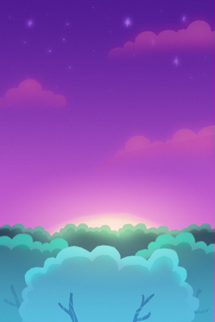
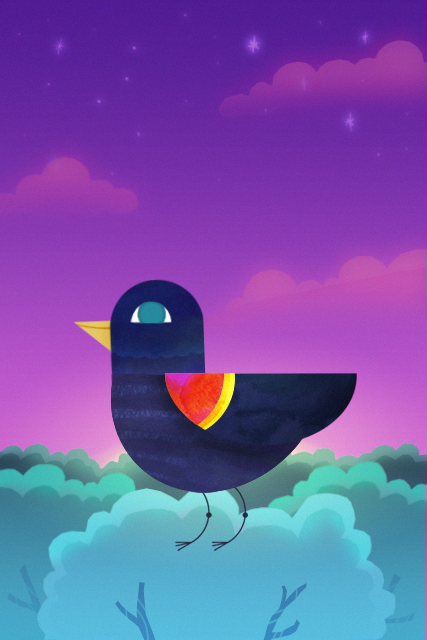

What's keeping
you up?
Tap to record
0:00
The bird has it.
...remind me later
When?
Morning
Tomorrow
This weekend
Let it go
More cares?
Blackbird
When something's on your mind, tell the bird. It'll carry it away.
Let it listen
Blackbird needs your microphone to hear you.
Your recordings never leave this phone.